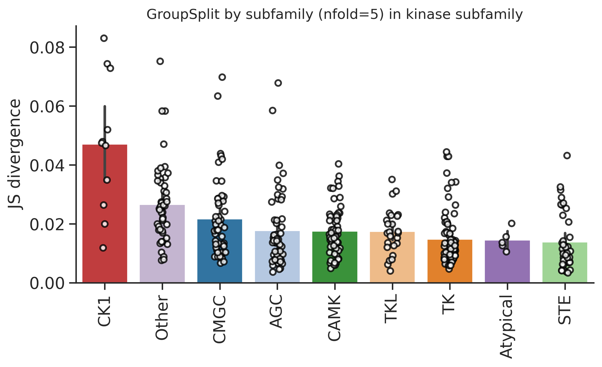

import numpy as np, pandas as pd
import os, random
from katlas.data import *
from katlas.train import *
from fastai.vision.all import *
from katlas.dnn import *DL training
Setup
seed_everything()def_device'cuda'Data
df=pd.read_parquet('train/pspa_t5.parquet')info=Data.get_kinase_info()
info = info[info.pseudo=='0']
info = info[info.kd_ID.notna()]
subfamily_map = info[['kd_ID','subfamily']].drop_duplicates().set_index('kd_ID')['subfamily']
family_map = info[['kd_ID','family']].drop_duplicates().set_index('kd_ID')['family']
group_map = info[['kd_ID','group']].drop_duplicates().set_index('kd_ID')['group']
pspa_info = pd.DataFrame(df.index.tolist(),columns=['kinase'])
pspa_info['subfamily'] = pspa_info.kinase.map(subfamily_map)
pspa_info['family'] = pspa_info.kinase.map(family_map)
pspa_info['group'] = pspa_info.kinase.map(group_map)df=df.reset_index()df.columnsIndex(['index', '-5P', '-4P', '-3P', '-2P', '-1P', '0P', '1P', '2P', '3P',
...
'T5_1014', 'T5_1015', 'T5_1016', 'T5_1017', 'T5_1018', 'T5_1019',
'T5_1020', 'T5_1021', 'T5_1022', 'T5_1023'],
dtype='object', length=1255)# column name of feature and target
feat_col = df.columns[df.columns.str.startswith('T5_')]
target_col = df.columns[~df.columns.isin(feat_col)][1:]feat_colIndex(['T5_0', 'T5_1', 'T5_2', 'T5_3', 'T5_4', 'T5_5', 'T5_6', 'T5_7', 'T5_8',
'T5_9',
...
'T5_1014', 'T5_1015', 'T5_1016', 'T5_1017', 'T5_1018', 'T5_1019',
'T5_1020', 'T5_1021', 'T5_1022', 'T5_1023'],
dtype='object', length=1024)Split
pspa_info.subfamily.value_counts()subfamily
Eph 12
Src 11
NEK 10
CK1 7
STE11 7
..
ZAK 1
Sev 1
Ret 1
Musk 1
Tie 1
Name: count, Length: 149, dtype: int64pspa_info.family.value_counts()family
STE20 27
CAMKL 20
CDK 17
MAPK 12
Eph 12
..
STK33 1
Sev 1
Ret 1
Musk 1
Tie 1
Name: count, Length: 92, dtype: int64pspa_info.group.value_counts()group
TK 78
CAMK 57
CMGC 52
AGC 52
Other 49
STE 39
TKL 25
CK1 11
Atypical 5
Name: count, dtype: int64splits = get_splits(pspa_info, group='subfamily',nfold=5)
split0 = splits[0]GroupKFold(n_splits=5, random_state=None, shuffle=False)
# subfamily in train set: 120
# subfamily in test set: 29Dataset
# dataset
ds = GeneralDataset(df,feat_col,target_col)len(ds)368dl = DataLoader(ds, batch_size=64, shuffle=True)xb,yb = next(iter(dl))
xb.shape,yb.shape(torch.Size([64, 1024]), torch.Size([64, 23, 10]))Model
n_feature = len(feat_col)
n_target = len(target_col)# def get_mlp(): return PSSM_model(n_feature,n_target,model='MLP')
def get_cnn(): return PSSM_model(n_feature,n_target,model='CNN')model = get_cnn()logits= model(xb)logits.shapetorch.Size([64, 23, 10])Loss
CE(logits,yb)tensor(3.3157, grad_fn=<MeanBackward0>)Metrics
KLD(logits,yb)tensor(0.5744, grad_fn=<MeanBackward0>)JSD(logits,yb)tensor(0.1175, grad_fn=<MeanBackward0>)CV train
cross-validation
oof = train_dl_cv(df,feat_col,target_col,
splits = splits,
model_func = get_cnn,
n_epoch=20,lr=3e-3,save='cnn_pspa')------fold0------
lr in training is 0.003| epoch | train_loss | valid_loss | KLD | JSD | time |
|---|---|---|---|---|---|
| 0 | 3.233706 | 3.125911 | 0.406453 | 0.085575 | 00:01 |
| 1 | 3.130510 | 3.048949 | 0.329490 | 0.074209 | 00:00 |
| 2 | 3.055997 | 3.130454 | 0.410995 | 0.065571 | 00:00 |
| 3 | 3.010011 | 3.088417 | 0.368959 | 0.066432 | 00:00 |
| 4 | 2.983442 | 3.059395 | 0.339937 | 0.059636 | 00:00 |
| 5 | 2.963942 | 3.014983 | 0.295525 | 0.053493 | 00:00 |
| 6 | 2.941524 | 2.903284 | 0.183826 | 0.041339 | 00:00 |
| 7 | 2.920246 | 2.822921 | 0.103463 | 0.025377 | 00:00 |
| 8 | 2.902542 | 2.829456 | 0.109998 | 0.026529 | 00:00 |
| 9 | 2.887325 | 2.807781 | 0.088324 | 0.020793 | 00:00 |
| 10 | 2.873063 | 2.803475 | 0.084017 | 0.019533 | 00:00 |
| 11 | 2.861299 | 2.807706 | 0.088248 | 0.020885 | 00:00 |
| 12 | 2.850185 | 2.800845 | 0.081387 | 0.019359 | 00:00 |
| 13 | 2.840891 | 2.799504 | 0.080046 | 0.018768 | 00:00 |
| 14 | 2.841491 | 2.814084 | 0.094626 | 0.020952 | 00:00 |
| 15 | 2.833544 | 2.803974 | 0.084516 | 0.020174 | 00:00 |
| 16 | 2.827274 | 2.801270 | 0.081811 | 0.019360 | 00:00 |
| 17 | 2.821252 | 2.799191 | 0.079733 | 0.018746 | 00:00 |
| 18 | 2.816021 | 2.800156 | 0.080698 | 0.019058 | 00:00 |
| 19 | 2.811490 | 2.801163 | 0.081706 | 0.019365 | 00:00 |
------fold1------
lr in training is 0.003| epoch | train_loss | valid_loss | KLD | JSD | time |
|---|---|---|---|---|---|
| 0 | 3.220115 | 3.122870 | 0.367961 | 0.079914 | 00:00 |
| 1 | 3.110324 | 3.013538 | 0.258628 | 0.061137 | 00:00 |
| 2 | 3.029848 | 3.004896 | 0.249986 | 0.043967 | 00:00 |
| 3 | 2.986253 | 3.025127 | 0.270218 | 0.044840 | 00:00 |
| 4 | 2.962428 | 2.937174 | 0.182265 | 0.038925 | 00:00 |
| 5 | 2.944227 | 2.868406 | 0.113497 | 0.027091 | 00:00 |
| 6 | 2.925777 | 2.851748 | 0.096838 | 0.023173 | 00:00 |
| 7 | 2.907046 | 2.846324 | 0.091415 | 0.022224 | 00:00 |
| 8 | 2.890109 | 2.833833 | 0.078924 | 0.018874 | 00:00 |
| 9 | 2.874512 | 2.829689 | 0.074779 | 0.018139 | 00:00 |
| 10 | 2.860773 | 2.830650 | 0.075741 | 0.018343 | 00:00 |
| 11 | 2.849061 | 2.825806 | 0.070897 | 0.017139 | 00:00 |
| 12 | 2.838997 | 2.826859 | 0.071950 | 0.017447 | 00:00 |
| 13 | 2.830334 | 2.829360 | 0.074451 | 0.018066 | 00:00 |
| 14 | 2.822370 | 2.820644 | 0.065735 | 0.015937 | 00:00 |
| 15 | 2.815302 | 2.823604 | 0.068695 | 0.016640 | 00:00 |
| 16 | 2.809580 | 2.821716 | 0.066807 | 0.016194 | 00:00 |
| 17 | 2.804384 | 2.819929 | 0.065020 | 0.015721 | 00:00 |
| 18 | 2.800062 | 2.819813 | 0.064903 | 0.015710 | 00:00 |
| 19 | 2.796715 | 2.820354 | 0.065445 | 0.015832 | 00:00 |
------fold2------
lr in training is 0.003| epoch | train_loss | valid_loss | KLD | JSD | time |
|---|---|---|---|---|---|
| 0 | 3.200740 | 3.130967 | 0.378583 | 0.081704 | 00:00 |
| 1 | 3.092526 | 2.995235 | 0.242852 | 0.059953 | 00:00 |
| 2 | 3.019362 | 2.951045 | 0.198661 | 0.041754 | 00:00 |
| 3 | 2.978442 | 2.969943 | 0.217558 | 0.044737 | 00:00 |
| 4 | 2.954714 | 2.931453 | 0.179070 | 0.039580 | 00:00 |
| 5 | 2.935677 | 2.881018 | 0.128634 | 0.029679 | 00:00 |
| 6 | 2.917925 | 2.860357 | 0.107974 | 0.025191 | 00:00 |
| 7 | 2.900897 | 2.853231 | 0.100847 | 0.023653 | 00:01 |
| 8 | 2.885049 | 2.845886 | 0.093502 | 0.022020 | 00:00 |
| 9 | 2.870798 | 2.845885 | 0.093501 | 0.021971 | 00:00 |
| 10 | 2.857675 | 2.846555 | 0.094171 | 0.022086 | 00:00 |
| 11 | 2.847099 | 2.842916 | 0.090532 | 0.021348 | 00:00 |
| 12 | 2.837596 | 2.842217 | 0.089834 | 0.021036 | 00:00 |
| 13 | 2.828788 | 2.845114 | 0.092730 | 0.021663 | 00:00 |
| 14 | 2.821526 | 2.838382 | 0.085998 | 0.020212 | 00:00 |
| 15 | 2.814844 | 2.838639 | 0.086255 | 0.020221 | 00:00 |
| 16 | 2.809012 | 2.839795 | 0.087412 | 0.020456 | 00:00 |
| 17 | 2.804014 | 2.838342 | 0.085959 | 0.020113 | 00:00 |
| 18 | 2.799799 | 2.839126 | 0.086743 | 0.020303 | 00:00 |
| 19 | 2.796194 | 2.839238 | 0.086854 | 0.020336 | 00:00 |
------fold3------
lr in training is 0.003| epoch | train_loss | valid_loss | KLD | JSD | time |
|---|---|---|---|---|---|
| 0 | 3.204410 | 3.124295 | 0.361279 | 0.078598 | 00:00 |
| 1 | 3.096633 | 3.004290 | 0.241274 | 0.059625 | 00:00 |
| 2 | 3.020993 | 2.954940 | 0.191923 | 0.038023 | 00:00 |
| 3 | 2.977240 | 2.974516 | 0.211500 | 0.043791 | 00:00 |
| 4 | 2.949267 | 2.924750 | 0.161734 | 0.036755 | 00:00 |
| 5 | 2.927110 | 2.898294 | 0.135277 | 0.031197 | 00:00 |
| 6 | 2.907787 | 2.866850 | 0.103833 | 0.024755 | 00:00 |
| 7 | 2.889578 | 2.859005 | 0.095989 | 0.022904 | 00:00 |
| 8 | 2.873679 | 2.851498 | 0.088482 | 0.020949 | 00:00 |
| 9 | 2.860200 | 2.855871 | 0.092855 | 0.022186 | 00:00 |
| 10 | 2.848846 | 2.852453 | 0.089437 | 0.021289 | 00:00 |
| 11 | 2.838321 | 2.855460 | 0.092444 | 0.021871 | 00:00 |
| 12 | 2.829044 | 2.850951 | 0.087935 | 0.020768 | 00:00 |
| 13 | 2.820891 | 2.850833 | 0.087817 | 0.020675 | 00:00 |
| 14 | 2.813844 | 2.850501 | 0.087485 | 0.020620 | 00:00 |
| 15 | 2.807759 | 2.848204 | 0.085187 | 0.020092 | 00:00 |
| 16 | 2.802352 | 2.848961 | 0.085945 | 0.020265 | 00:00 |
| 17 | 2.797838 | 2.848315 | 0.085299 | 0.020222 | 00:00 |
| 18 | 2.793763 | 2.847828 | 0.084811 | 0.020079 | 00:00 |
| 19 | 2.790769 | 2.847723 | 0.084707 | 0.020046 | 00:00 |
------fold4------
lr in training is 0.003| epoch | train_loss | valid_loss | KLD | JSD | time |
|---|---|---|---|---|---|
| 0 | 3.209750 | 3.119418 | 0.369865 | 0.080478 | 00:00 |
| 1 | 3.100083 | 3.013516 | 0.263963 | 0.058817 | 00:00 |
| 2 | 3.029029 | 3.131990 | 0.382436 | 0.055820 | 00:00 |
| 3 | 2.985650 | 3.112973 | 0.363419 | 0.054572 | 00:00 |
| 4 | 2.959636 | 3.076775 | 0.327221 | 0.052438 | 00:00 |
| 5 | 2.940694 | 2.988379 | 0.238825 | 0.044601 | 00:00 |
| 6 | 2.920553 | 2.918243 | 0.168689 | 0.036624 | 00:00 |
| 7 | 2.900961 | 2.863245 | 0.113691 | 0.026403 | 00:00 |
| 8 | 2.885111 | 2.866303 | 0.116750 | 0.027012 | 00:00 |
| 9 | 2.870587 | 2.850549 | 0.100995 | 0.023691 | 00:00 |
| 10 | 2.858413 | 2.844527 | 0.094974 | 0.022394 | 00:00 |
| 11 | 2.847218 | 2.845756 | 0.096203 | 0.022637 | 00:00 |
| 12 | 2.838991 | 2.846041 | 0.096488 | 0.022478 | 00:00 |
| 13 | 2.830662 | 2.851257 | 0.101704 | 0.023702 | 00:00 |
| 14 | 2.824315 | 2.846768 | 0.097214 | 0.022712 | 00:00 |
| 15 | 2.817429 | 2.839707 | 0.090153 | 0.020986 | 00:00 |
| 16 | 2.811808 | 2.838882 | 0.089328 | 0.020835 | 00:00 |
| 17 | 2.806540 | 2.838375 | 0.088822 | 0.020646 | 00:00 |
| 18 | 2.802111 | 2.838036 | 0.088482 | 0.020585 | 00:00 |
| 19 | 2.798786 | 2.837518 | 0.087965 | 0.020500 | 00:00 |
oof.to_parquet('raw/oof_pspa.parquet')Score
from katlas.pssm import *
from functools import partialdef score_df(target,pred,func):
distance = [func(target.loc[i],pred.loc[i,target.columns]) for i in target.index]
return pd.Series(distance,index=target.index)jsd_df = partial(score_df,func=js_divergence_flat)
kld_df = partial(score_df,func=kl_divergence_flat)target=df[target_col].copy()pspa_info['group_split'] = oof.nfoldpspa_info['group_jsd'] =jsd_df(target,oof)from katlas.plot import *set_sns()plot_bar(pspa_info,'group_jsd',group='group',palette=group_color,figsize=(8,4))
plt.ylabel('JS divergence')
plt.title('GroupSplit by subfamily (nfold=5) in kinase subfamily')Text(0.5, 1.0, 'GroupSplit by subfamily (nfold=5) in kinase subfamily')
group_color = pd.DataFrame(group_color).Tsty_color{'S': (0.12156862745098039, 0.4666666666666667, 0.7058823529411765),
'T': (0.6823529411764706, 0.7803921568627451, 0.9098039215686274),
'Y': (1.0, 0.4980392156862745, 0.054901960784313725)}group_color = group_color.reset_index(names='modi_group')info = Data.get_kinase_info()subfamily_color = info[['modi_group','subfamily']].merge(group_color).drop(columns=['modi_group']).set_index('subfamily')subfamily_color = subfamily_color.apply(tuple, axis=1).to_dict()plot_bar(pspa_info,'group_jsd',group='subfamily',palette = subfamily_color, figsize=(30,7))
plt.ylabel('JS divergence')
# plt.title('Stratified split in kinase subfamily')Text(0, 0.5, 'JS divergence')
pspa_info.sort_values('group_jsd')| kinase | subfamily | family | group | group_split | group_jsd | |
|---|---|---|---|---|---|---|
| 272 | Q9UKE5_TNIK_HUMAN_KD1 | MSN | STE20 | STE | 4 | 0.003378 |
| 246 | Q13464_ROCK1_HUMAN_KD1 | ROCK | DMPK | AGC | 1 | 0.003626 |
| 104 | O95819_M4K4_HUMAN_KD1 | MSN | STE20 | STE | 4 | 0.003785 |
| 20 | Q13873_BMPR2_HUMAN_KD1 | STKR2 | STKR | TKL | 3 | 0.003992 |
| 265 | Q9UL54_TAOK2_HUMAN_KD1 | TAO | STE20 | STE | 0 | 0.004083 |
| ... | ... | ... | ... | ... | ... | ... |
| 65 | P68400_CSK21_HUMAN_KD1 | CK2 | CK2 | CMGC | 2 | 0.069807 |
| 64 | Q9Y6M4_KC1G3_HUMAN_KD1 | CK1 | CK1 | CK1 | 4 | 0.072875 |
| 58 | P48729_KC1A_HUMAN_KD1 | CK1 | CK1 | CK1 | 4 | 0.074366 |
| 125 | Q8TAS1_UHMK1_HUMAN_KD1 | KIS | KIS | Other | 3 | 0.075230 |
| 63 | P78368_KC1G2_HUMAN_KD1 | CK1 | CK1 | CK1 | 4 | 0.083079 |
368 rows × 6 columns
from katlas.pssm import *def plot_one_pssm(target,pred,idx):
target_pssm = recover_pssm(target.loc[idx])
pred_pssm = recover_pssm(pred.loc[idx,target.columns])
plot_heatmap(target_pssm)
plot_heatmap(pred_pssm)set_sns(50)plot_one_pssm(target,oof,246)